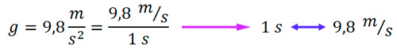
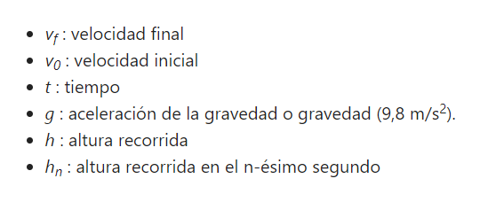

MVCL - Movimiento Vertical de Caída Libre
El movimiento de vertical de caída libre o MVCL es un movimiento en el cual el móvil describe una trayectoria vertical y se mueve únicamente bajo la influencia de la gravedad una vez que es liberado.
El movimiento vertical de caída libre se realiza en el vacío, sin aire. Por ello no tomamos en cuenta factores como la resistencia del aire, los tornados o los vientos huracanados.
En este capítulo, es muy importante recordar la aceleración.
ACELERACIÓN
La aceleración indica la variación de la velocidad por unidad de tiempo. En el movimiento vertical de caída libre, trabajaremos con la aceleración de la gravedad, cuyo valor es de 9,8 m/s2. Este valor indica que:

El valor de aceleración de la gravedad, nos indica que en 1 segundo, la velocidad del móvil va a cambiar en 9,8 m/s2.
EJEMPLO
Una manzana se deja caer desde cierta altura, realizando un MVCL. Encuentra su velocidad después de 1 y 2 segundos después de ser liberada.
SOLUCIÓN
Ten en cuenta que en el MVCL, los cuerpos se mueven bajo la influencia de la gravedad, cuyo valor es de 9,8 m/s2. Recuerda que este valor nos indica que en 1 segundo, la velocidad va a cambiar 9,8 m/s2. Hay que tener en cuenta que si la manzana se deja caer, su velocidad inicial es 0.

Si bien la caída de un objeto es lo primero que se viene a la mente cuando pensamos en caída libre, no es el único caso.
CASOS DEL MVCL:
Tenemos 3 casos en el MVCL:

PROPIEDADES DEL MVCL:
Hay 3 propiedades muy importantes, que nos permitirán resolver los problemas:

1) En la altura máxima alcanzada, la velocidad instantánea es cero.

2) En un mismo nivel, la rapidez de subida es igual que la rapidez de bajada.

3) Entre dos niveles, el tiempo de subida es igual al tiempo de bajada.

FÓRMULAS DEL MOVIMIENTO VERTICAL DE CAÍDA LIBRE
Las fórmulas que utilizamos en caída libre son las mismas fórmulas de MRUV, sólo que sustituimos la aceleración (a), por la aceleración de la gravedad (g), entonces, quedarían de la siguiente manera:

REGLA DE SIGNOS:
Usar (+) → si el móvil baja.
Usar (-) → si el móvil sube.
Donde:

Recuerda que el truco en este capítulo consiste en utilizar la fórmula correcta sabiendo que a cada fórmula le falta una variable. Por ejemplo, si en el problema, me dan como dato la velocidad inicial, la gravedad, la altura recorrida, y me piden hallar el tiempo, trabajaría con la fórmula que tiene estos datos y que no toma en cuenta a la velocidad final, pues la velocidad final no la mencionan por ningún lado.
No olvides que si un objeto se suelta desde cierta altura, va a empezar a descender con una velocidad inicial de 0 m/s, pues fue soltado o se dejó caer. Mientras que los objetos que son lanzados si tienen una velocidad inicial distinta.
¡PARA MAS INFORMACIÓN SOBRE MVCL HAZ CLICK AQUI!